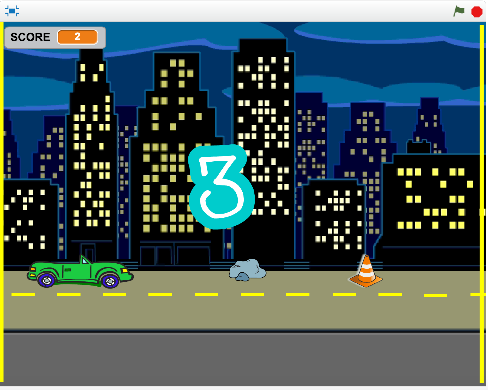

Janice Liu
Short Bio
Janice Liu is a rising junior of Dublin High School. She was born and raised in the Bay Area.
Fun Fact:I've never been on an airplane before.
Likes and Dislikes
-watching movies
-reading novels
-cats and dogs (especially those that are fluffy/furry)

Car Gone Crazy
This is a side-scroller game created on Scratch. The car has broken brakes, so it must jump over the different sprites, representing obstacles it must avoid to prevent crashing. We used cloning to make the game seem continuous with the same sprites that would clone once they successfully reach the edge past the car and form on the other side of the game screen. These sprites are programmed move towards the car, which stays in a stationary position with only a jumping movement.

Links to Favorite Websites: